6．级数法
我们曾经顺便提到，某些微分方程是用无穷级数去解的。这个方法的重要性甚至到现在还值得对这一课题作一些特别的评注。自从1700年以来，级数解用得如此广泛，以至现在我们不得不限于少量的例子。
我们知道，牛顿利用了级数去积分稍为复杂一点的函数，其中甚至只牵涉到求曲线下的面积问题。他也用级数去求解一阶方程。例如，求解
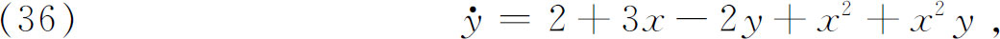
牛顿假定
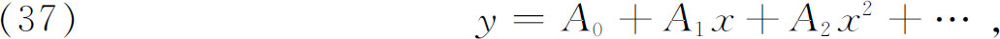
于是
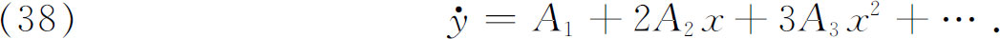
把（37）与（38）代入（36），并使x的同次幂的系数相等，就得到
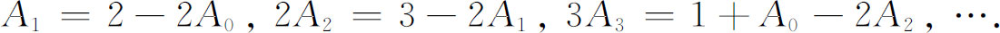
于是，除了A0以外，我们确定了所有的Ai。那时已经注意到A0是不定的，因而有无穷多个解。但是，直到1750年左右，对任意常数的意义还不是完全了解的。莱布尼茨用无穷级数解某些初等的微分方程(36)，也用了上述的未定系数法。
大约在1750年以后，欧拉把级数方法提到了重要的位置，用来求解那些不能以紧凑形式积分的微分方程。虽然他求解的是特殊的微分方程，而且其细节往往是复杂的，但是他的方法就是我们现在采用的方法。他假定解的形式为
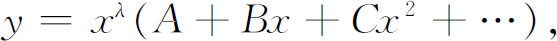
把y与它的微商代入微分方程，利用所得级数中x的各次幂的系数必须等于0这个条件，就确定出λ与系数A，B，C，…，这样，对他在振动薄膜的著作中出现的常微分方程(37)（第22章第3节），即
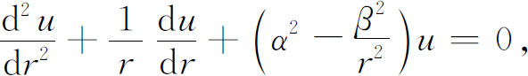
现在叫做贝塞尔方程，欧拉是用一个无穷级数求解的。他给出的解
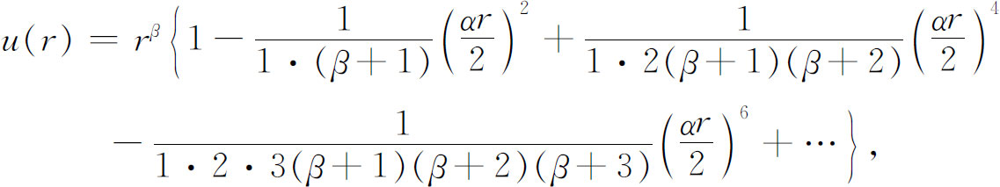
除了一个只依赖于β的因子外，就是我们现在所写的
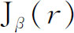
。在有关这些函数的进一步的著作中，他证明，对于半奇整数的β，相应的级数化成初等函数。他而且注意到，对于实的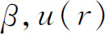
有无穷多个零点，他还给出了u（r）的积分表示。最后，对于β＝0与β＝1，他给出了微分方程第二个线性独立的级数解。欧拉在《积分学原理》(38)中研究了超几何方程
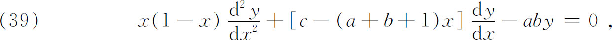
并且给出了级数解
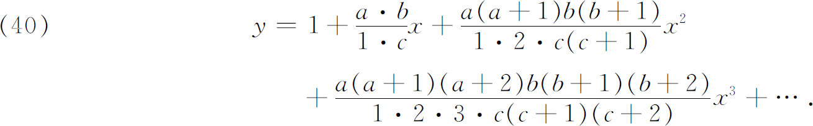
在1778年写的关于这个题目的重要论文(39)中，他再一次给出了上述形式的方程（39）和级数解（40）。他曾经写了另外几篇论文，讨论了他称之为超几何级数的级数，但这名字原先是由沃利斯用来称呼别的级数的。“超几何”一词是高斯的朋友和老师普法夫（Johann Friedrich Pfaff，1765—1825）提出的，用来形容微分方程（39）和级数（40）。级数（40）中的y现在用记号F（a，b，c；z）来表示。我们用它表示欧拉得到的有名的关系式
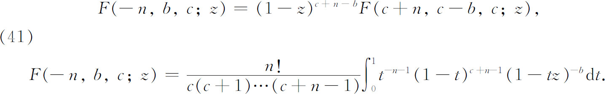